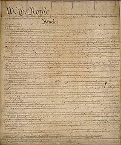

Home
About
Background
US Constitution
British Governing Documents
Governing Systems
Conclusion
Citations
The constitution of the United States would represent the groundwork for the most powerful nation ever to exist. Many of the principles and ideas that guide the constitution come from english roots and governing documents. The Constitution was written by the leaders of American colonies which was now the United States of America. These leaders included George Washington, Alexander Hamilton, Ben Franklin, and James Madison. All of these founding fathers had lived under the tyranny of the British Empire and rebelled accordingly in the American Revolutionary War.
The tyranny that the founders and 18th century Americans experienced greatly influenced the Constitution and base principals that the new American government would operate on. According to Ashleigh Thoman, “The greatest principal in the constitution is it’s ingenious, systematic, and inspiring rules and systems that would make a tyranny in the new government virtually impossible.” (Thoman 2016). This is evident in our basic understanding of how the government works as laid out in the constitution. As we are taught in 3rd grade, the government has three branches of power, The Executive, The Legislative, and The Judicial branch. Each branch has its own respective powers like vetoes, unconstitutional rulings, and executive orders.The greatest part is the innovative system of checks and balances within the government which makes sure that each branch of government checks each others power and then balances it out.
This idea came from the British in the following way, the founders knew that a tyranny could arise when power was unchecked. This was evident in the British rule in the 18th century amidst many other years. The most innovative thing the founders did when setting up the new government was to make sure that power within the government would never go unchecked. This is evident through congress’s power to veto a bill that the president put on the floor and vice versa. The judicial branch has the power to overrule any bill or law that they deem “unconstitutional”.
